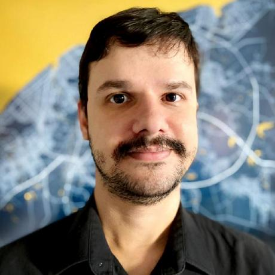

Mestre em FilosofiaMaster in Philosophy
UECE · 2026
Coordenador-Geral · CAPES Director-General · CAPES
Mestre em Filosofia e gestor público dedicado a unir teorias da justiça, políticas educacionais e ciência de dados a serviço da educação. Master in Philosophy and public manager bridging theories of justice, education policy and data science in service of education.

UECE · 2026
IDP · 2026
Integração Acadêmica · CAPESAcademic Integration · CAPES
Justiça e políticas educacionaisJustice & education policy
Professor de Filosofia formado pela Universidade Federal do Ceará — onde foi bolsista de iniciação científica em Lógica e Metafísica (FUNCAP) e em Filosofia Política (UFC), com estágio na PUC-RS pelo PROCAD/CAPES. Também graduado em Gestão Financeira e em Ciências Contábeis, com especializações em Gestão e Normas Educacionais e em Filosofia e Direitos Humanos, e mestrado em Filosofia pela UECE, pesquisando a justiça distributiva em John Rawls.
Atualmente é Coordenador-Geral de Integração Acadêmica da CAPES, responsável pelas Coordenações de Ciência de Dados e de Estudos Avançados. Reúne experiência em teorias da justiça, gestão pública, políticas educacionais e análise de dados e indicadores para a educação.
Philosophy professor trained at the Federal University of Ceará — where he held research fellowships in Logic & Metaphysics (FUNCAP) and Political Philosophy (UFC), with a research stay at PUC-RS through PROCAD/CAPES. He also holds degrees in Financial Management and Accounting, specializations in Educational Governance and Philosophy & Human Rights, and a Master's in Philosophy from UECE, researching distributive justice in John Rawls.
He currently serves as Director-General of Academic Integration at CAPES, overseeing the Data Science and Advanced Studies coordinations. His work spans theories of justice, public management, education policy, and data and indicator analysis for education.
Universidade Estadual do Ceará (UECE)
Dissertação: “O conceito de justiça distributiva na arquitetura do liberalismo igualitário de John Rawls”. Linha de Filosofia Social e Política.
Thesis: “The concept of distributive justice in the architecture of John Rawls's egalitarian liberalism.” Social and Political Philosophy.
Instituto Brasileiro de Ensino, Desenvolvimento e Pesquisa (IDP)
Carga horária: 384h.384 hours.
Centro Universitário União das Américas (Uniamérica)
Unyleya Editora e Cursos
Universidade Federal do Ceará (UFC)
Monografia: “Uma utopia realista global: O direito dos povos de John Rawls”. Bolsista FUNCAP.
Thesis: “A realistic global utopia: John Rawls's Law of Peoples.” FUNCAP fellow.
Universidade Estácio de Sá (UNESA)
Universidade Estácio de Sá (UNESA)
Responsável pelas Coordenações de Ciência de Dados e de Estudos Avançados.
Oversees the Data Science and Advanced Studies coordinations.
Especialização em Gestão Escolar — disciplina de boas práticas na educação pública e privada.
Specialization in School Management — best practices in public and private education.
Gestão administrativa, financeira e de planejamento em escolas da rede pública estadual.
Administrative, financial and planning management across state public schools.
Gestão de projetos e políticas educacionais com foco na Educação em Tempo Integral.
Project management and education policy focused on Full-Time Education.
Apoio à implementação, avaliação e monitoramento do Novo Ensino Médio nos estados.
Support to the implementation, evaluation and monitoring of the New High School reform.
Projeto de Integração de Avaliação, Formação e Currículo em Matemática Básica.
Project integrating assessment, training and curriculum in Basic Mathematics.
Pesquisa em Filosofia Política e em Lógica e Metafísica, com estágio de pesquisa na PUC-RS.
Research in Political Philosophy and in Logic & Metaphysics, with a research stay at PUC-RS.
Baixar currículo (PDF)Download CV (PDF) Currículo Lattes completoFull Lattes CV